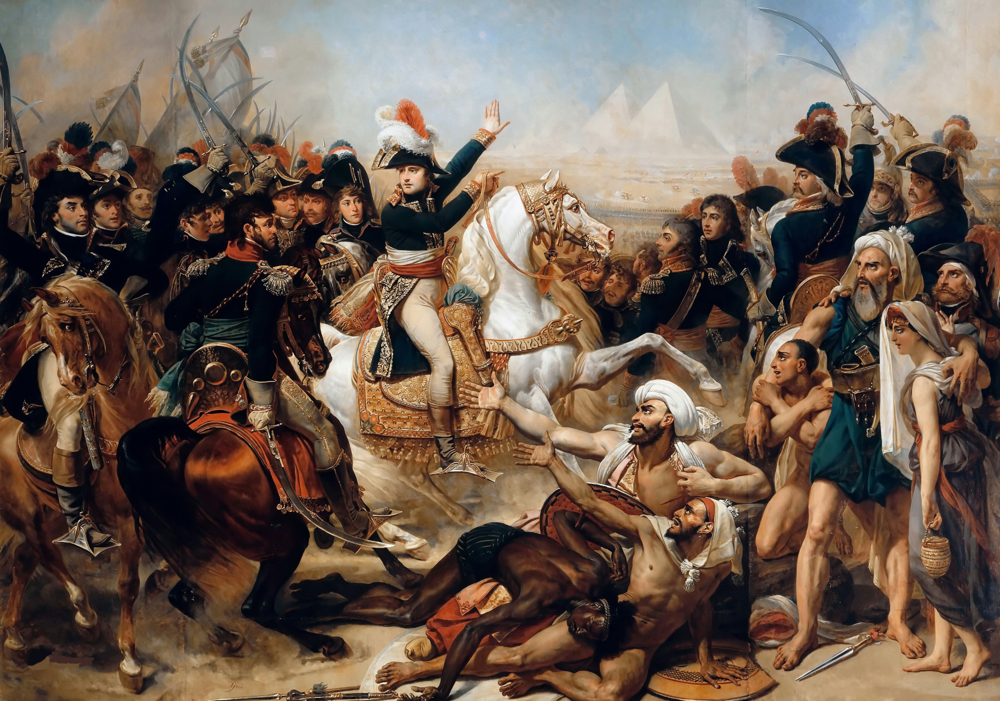
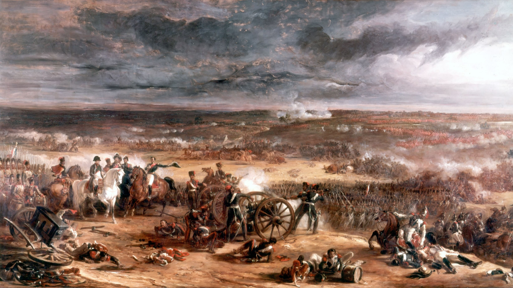

Newton poszt:

Képzeljétek el, hogy ma miközben egy fa alatt ültem és gondolkodtam a fejemre esett egy alma. Bár egy kicsit fájt, de adott nekem egy gondolatot amivel rájöttem, hogy létezik gravitáció. Hiszen mivel az alma mikor leesett a fáról nem maradt ott a levegőben, hanem elkezdett lefelé esni. Az az erő ami lefelé húz mindent az a gravitáció.
Napoleon poszt:

Katonák! A piramisok árnyékából negyven év történelme figyel rátok. Egy új világ kapujában állunk, és a dicsőség ott vár ránk a sivatagban. Franciaország nagyságát visszük el a Nílusig.
Newton poszt:

Mai nap üveglencsékkel kisérlteztem, és nem hiszitek el mit fedeztem fel. Sikerült bebizonyítanom, hogy a fehér fény nem tiszta, hanem egy szín keverék és ez a szivárvány. Szivárványban az összes szín benne van, nem varázslat, hanem geometria és fizika.
Napoleon poszt:

Katonák! A sors ma ellenünk fordult, de bátorságotok örökké élni fog. Egy csata elveszett – de a dicsőség, amit szereztetek, nem vész el. Franciaország emlékezni fog rátok. Vive le français!